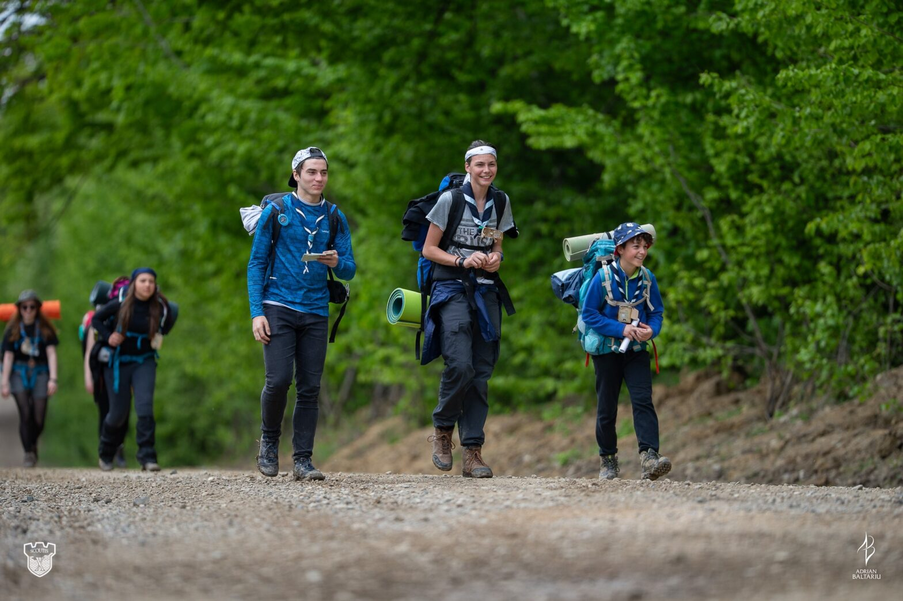

De ce să mergi la ScoutIS

ScoutIS. Un camp fain din Iași din multe puncte de vedere. Am aflat de el de la organizatori, în timp ce eram în alt camp tot de cercetași. După ce mi-au zis câte ceva despre el, am zis că vreau să merg.
Din primele minute de când am ajuns acolo am simțit vibe-ul ăla de camp autentic cercetășesc.
Deschiderea campului a fost una originală și nemaivăzută de mine în vreun camp. O trupă rock a cântat pe o scenă în fața tuturor cercetașilor.
Zilele următoare au fost și mai interesante: am plecat într-un hike în care am lucrat cu harta pe un traseu de câțiva km și în care am avut de îndeplinit diferite provocări. A fost super, dar adevărata provocare a fost al doilea hike în care am ajuns la un loc de camp unde a trebuit să ne facem singuri adăpostul în care aveam să dormim. Am avut o patrulă foarte tare cu care am lucrat bine și eficient. În scurt timp am avut și adăpostul făcut și am dormit în el.
Scoutis are multe momente superbe, eu am spus doar esențialul, dar cel mai bine ar fi să mergi și să le trăiești și tu 🙂
Seba, explorator